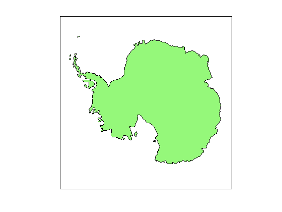
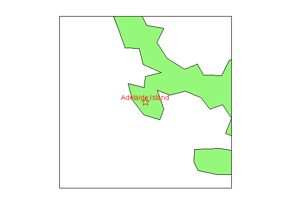
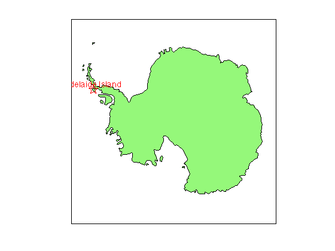
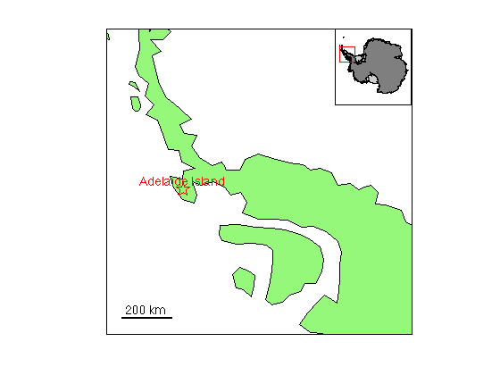
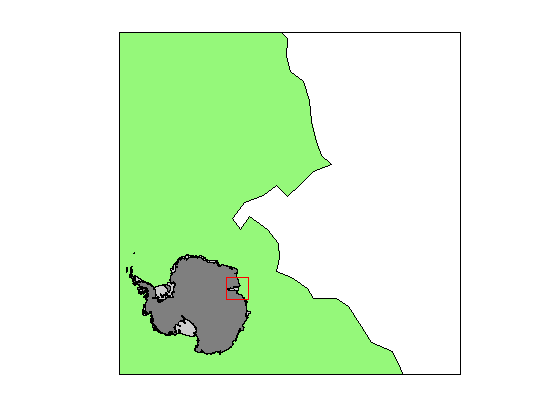
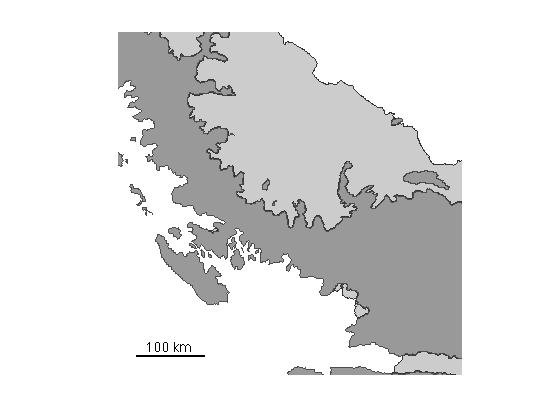
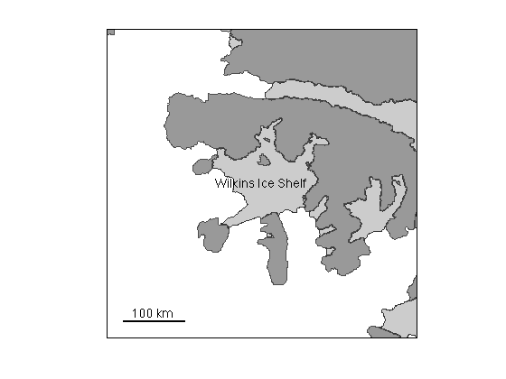
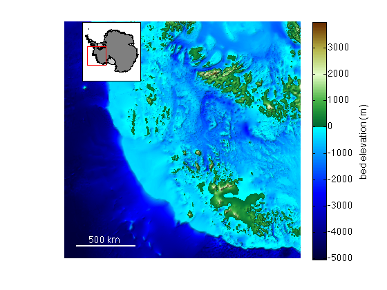
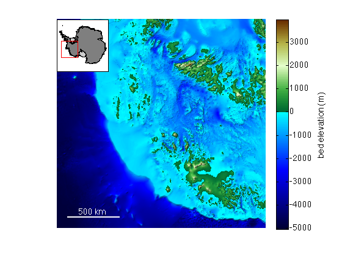

mapzoom documentation
mapzoom is part of Antarctic Mapping Tools for Matlab (Greene et al., 2017). Click here for a complete list of functions in AMT.
This function zooms a map to a specified location and scale.
Use of mapzoom or anything that requires a license for Matlab's Mapping Toolbox is not recommended. Since I started developing AMT, I've come to realize Matlab's Mapping Toolbox is often rather inefficient, inflexible, and dependence on it can make it difficult to share code with colleagues who might not have a license. Instead of mapzoom, try using mapzoomps and the suite of functions ending in ps.
This function is part of the Antarctic Mapping Tools package and requires Matlab's Mapping Toolbox.
Contents
Syntax
mapzoom(lat,lon)
mapzoom(x,y)
mapzoom('SCAR location')
mapzoom(...,'mapwidth',widthkm)
mapzoom(...,widthkm)
mapzoom(...,'inset')
mapzoom(...,'inset','location')
mapzoom(...,'insetsize',sizefraction)
mapzoom(...,'frame','off')
mapzoom('default')Description
mapzoom(lat,lon) centers a 500 km wide map about the georeferenced location given by lat, lon.
mapzoom(x,y) centers a 500 km wide map about the polar stereographic eastings and northings x and y. Polar stereographic coordinates are automatically determined by the islatlon function.
mapzoom('SCAR location') uses scarloc to find the lat,lon corresponding to the string 'SCAR location'.
mapzoom(...,'mapwidth',widthkm) specifies width of the map in kilometers. Default map width is 500 km.
mapzoom(...,widthkm) is shorthand for 'mapwidth',widthkm.
mapzoom(...,'inset') places an inset map in the lower right hand corner of the map to show geographic context.
mapzoom(...,'inset','location') specifies location of the inset. Location can be
- 'southeast' (lower right) {default}
- 'northwest' (upper left)
- 'northeast' (upper right)
- 'southwest' (lower left)
mapzoom(...,'insetsize',sizefraction) specifies size of the inset as a fraction of the width of the current map. Default sizefraction is 0.25.
mapzoom(...,'frame','off') removes frame from the inset.
mapzoom('default') returns a map to default zoom extents.
Example 1
antmap
load coast
patchm(lat,long,[.588 .976 .482])
 I think one thing we can all agree upon is that Matlab's built in coast line is hideous, and can't seem to decide whether it's a coast line or a grounding line. But we'll use it simply to show how you might go about using mapzoom. Let's zoom in on Adelaide Island:
mapzoom('adelaide island')
Matlab's built-in coast line (not surprisingly) does not show Adelaide Island as an island. Let's show it with a red label:
scarlabel('Adelaide Island','fontangle','italic',... 'marker','p','color','red','markersize',16)
Oh, Matlab doesn't recognize Adelaide Island as an island. Let's step back:
mapzoom('default')
 Now let's zoom in on the AP and include an inset for context:
mapzoom('antarctic peninsula',1200,'inset','northeast') scalebar('length',200)
We can also zoom to an arbitrary lat/lon and this time let's remove the frame from the inset. Let's also make the inset big:
mapzoom(-69,71,'mapwidth',1000,'inset','southwest',... 'frame','off','insetsize',.4)
Example 2: Pairing with Bedmap2
Here we use the Bedmap2 Toolbox for Matlab and zoom in on an arbitrary lat/lon location:
figure bedmap2 'patchshelves' bedmap2 'patchgl' mapzoom(-68,-65) scalebar
Or we can zoom to a SCAR location:
figure bedmap2 patchshelves bedmap2('patchgl','frame','on') mapzoom('Wilkins Ice shelf') scarlabel('Wilkins Ice Shelf','fontangle','italic') scalebar
Now let's look at Thwaites bed topography:
figure mapzoom('thwaites glacier','inset','northwest',... 'mapwidth',2000) bedmap2('bed') scalebar('length',500,'color','white') shadem([225 70],-19)
Fixing a misaligned inset
And you see the iset doesn't align very well because the colorbar bumped things around. So call mapzoom again with the same arguments and that should fix it:
mapzoom('thwaites glacier','inset','northwest',... 'mapwidth',2000)
Citing AMT
If this function or any other part of Antarctic Mapping Tools is useful for you, please cite the paper that describes AMT.
Greene, C. A., Gwyther, D. E., & Blankenship, D. D. Antarctic Mapping Tools for Matlab. Computers & Geosciences. 104 (2017) pp.151-157. doi:10.1016/j.cageo.2016.08.003.
Author info and function history
This function was originally created as bedmap2_zoom in September 2013. In August 2014 the function was renamed mapzoom and made more efficient and robust. Another major improvement to this function came with inclusion of Kelly Kearney's plotboxpos function, which accurately pins insets to map corners. Updated October 2015 to accept polar stereographic meters as input center location.
Created by Chad A. Greene Institute for Geophysics The University of Texas at Austin